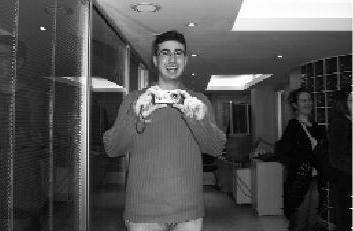

TUP, insanın bir şeyleri bilerek, isteyerek, heyecanla ve bilgiyle yola çıkabildiği tek yer. Hem ailem hem dostum hem çalıştığım yer… Bir iş olsa, ideal bir iş de diyebilirim. Zamandan, mekândan bağımsız bir arkadaşlığın olduğu yer. Doğru insanlar, doğru yerlerde karşılaşır. TUP bunun için doğru yer. (Hidayet Tunç)
Projenin ilk toplantısını yaptık. Çıktım toplantıdan. Cinnah'tan yukarı doğru çıkıyorum. Peşime bir genç takıldı. "Bu iş şöyle olmadı, böyle olmadı" diye yakınıyor. "Ben bir eğitim verdim. Gidin bunu verin" dedim. Projeden anladığım bu. Hidayet peşimi hiç bırakmadı. "Bak şöyle yapalım, böyle yapalım" diye boyundan büyük laflar etti. Hidayet'ten öğrendiğim şey şu: Boyundan büyük laflar etmeye cesaretin varsa hiç korkma. Her yerde katkı sağlarsın. Aslan Hidayet.